캠페인 1개
일 예산 미소진목표 CPA 입찰 = 소진 X
영상·이미지 광고를 직접 제작·집행했습니다. GA4로 유입부터 결제까지 분석했습니다.
직접 기획·제작하고 운영한 광고 소재를, 문제·가설·결과로 비교했습니다.
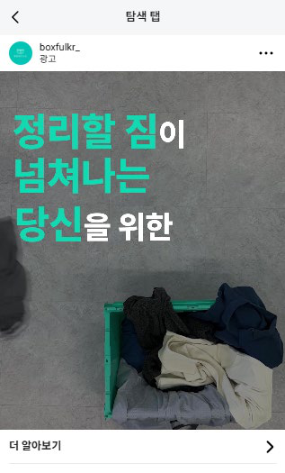
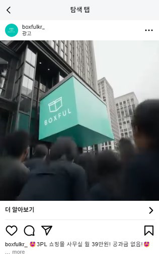
| 지표 | 기존 · 20초 | 개선 · 12초 | 변화 |
|---|---|---|---|
| 구성 | 공감형 서사 | Hook형(앞 3초 요약) | — |
| 클릭률 | 6.70% | 9.56% | +2.86%p |
| 전환 수 | 절대값 미확인 | +31.3% | |
| 전환당 비용 | 절대값 미확인 | −24% | |
※ 기간 전후 비교 · 길이·첫 장면·편집 동시 변경 — 단일 변수 A/B는 아님
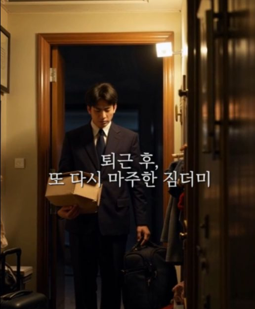
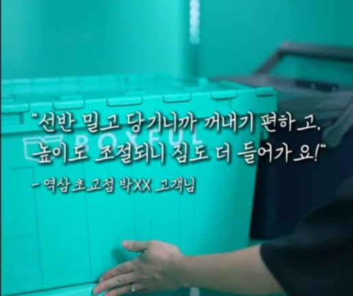
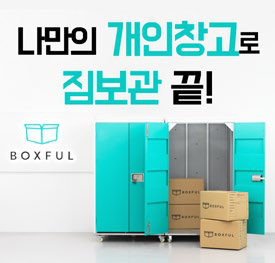
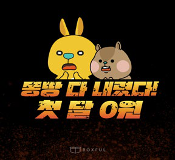
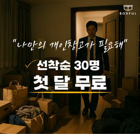
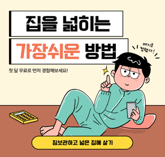
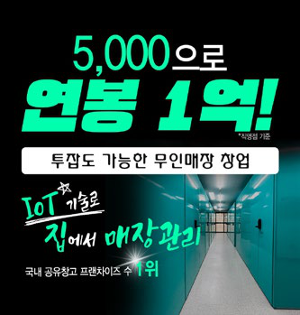
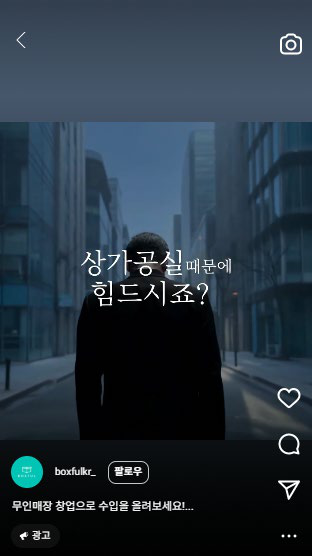
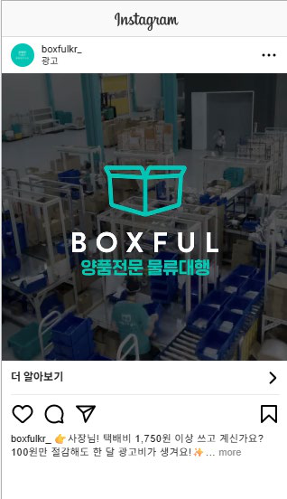
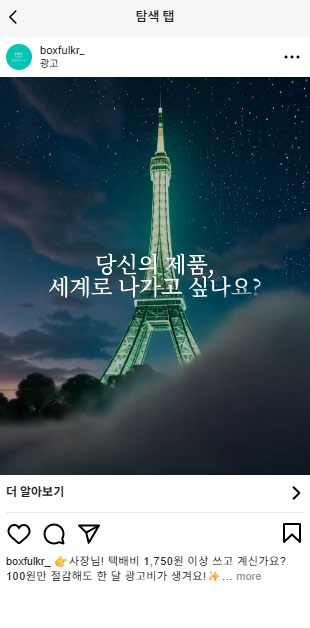
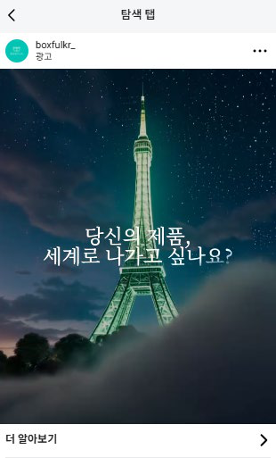
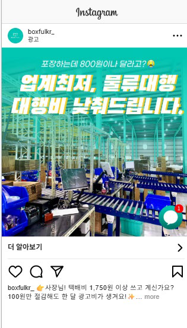
상가 공실을 가진 임대인에 맞춰 광고 메시지를 바꿨습니다.
평균 시청 시간 7초를 보고 서비스 설명을 앞에 배치했습니다.
광고주는 리드 '수'를 원했지만, 리드 단가가 아니라 내원당 비용으로 성과를 다시 보고 지역별로 예산을 재배분했습니다. (3인 · 기여 70%)
치과 임플란트 병원의 신규 환자 유치. 온라인 광고로 상담 리드를 모으고, 그 리드가 실제 병원 내원 → 시술로 이어져야 비로소 매출이 되는 고관여 오프라인 서비스.
광고주는 리드 볼륨(일 300개+)을, 내부적으로는 CPA 6만 이내를 둘 다 지켜야 했다 — 구글애즈 단독으로는 두 목표를 동시에 달성하기 어려웠다.
CPA 6만원 이내를 지키며 구글애즈 단독으로 집행할 때 관측된 일 리드는 약 70개 — 볼륨 목표(일 300개+)와 효율을 한 매체로 동시에 채우기 어려운 조건이었습니다.
"임플란트는 오프라인 내원이 필수인 고관여 상품이다. 그러니 '리드 CPA'가 아니라 '지역별 내원율·CAC·ROAS'로 성과를 봐야 효율이 더 정확히 보인다"는 관점을 세움.
리드 수가 아니라 내원·시술까지 책임지는 구조로 광고를 재정의 — 성과를 '리드 CPA'가 아닌 지역별 내원율·CAC·ROAS로 측정한 이유입니다.
2026년 7월 · 구글 메인 계정 · 비용 지수는 낮을수록 비용이 적음 · ROAS 100% 미만 = 수납액이 광고비에 미달
리드 CPA만 보면 경기를 끊었겠지만, 내원율이 높아 내원당 비용은 경기가 최저(지수 100 vs 경북대구 약 630)이고 ROAS도 경기가 최고(305%)였습니다. 그래서 ROAS가 낮은(수납액이 광고비에 미달) 인천·경북대구 집행을 중단하고, 경기남부·충청으로 예산을 옮겼습니다.
※ 내원당 비용 지수는 내원율이 집계된 경기남부·충청·경북대구만 산출(전북강원·인천은 내원율 미집계로 "—"). 실제 원단위는 비공개.
각 단계는 앞 단계 데이터(매체별 리드 품질 차이 등)를 보고 다음 매체를 더했습니다 — 아래 단계별 일 리드·CPA 참조.
CPA 6만 이내는 지켰지만 볼륨이 일 70개에서 한계.
볼륨 2배↑. 단 내원율 메타 2% < 구글 4% — 매체별 리드 품질 차이를 데이터로 확인.
'연령/관심사' 2계정 분리로 계정 간 노출 중복↓. 구글 80 : 메타 20 비율 유지.
KB서 검증한 시니어(45+) 타겟으로 틱톡 확장, CPA 4만대 안정화.
디멘드젠은 시그널이 부족하면 ML이 시사·정치 채널로 자동 수렴합니다 — 하지만 Google Audience Insights로 실제 전환 고객을 뜯어보니 본질은 금융 활동·자산 보유 시니어였습니다 (시청 채널 ≠ 잠재고객).
전환 고객의 In-market 관심사 색인 (평균 대비 배수 · Google Audience Insights 실측)
관찰 → 조치: 전환 고객에서 지수가 높았던 관심사를 2개 구글애즈 계정에 다르게(금융·자동차 / 보험·생활소비) 설정해 교차 적용 → 특정 지역 관심사 캠페인 CPA −26%. 중복 검증 결과 유입 연락처의 78.8%가 기존 캠페인 DB와 중복되지 않은 신규 연락처였습니다.
디멘드젠 캠페인의 유튜브 노출 채널 변화와 CPA 추이를 함께 분석 → 교체율이 평소(40%)보다 급등하면 '머신러닝이 재학습 중인지 vs 타겟이 흐트러진 건지'를 구분해 캠페인 재설정 시점을 판단. 예산 볼륨이 큰 소재일수록 교체 시 영향이 컸습니다.
경기남부가 일예산의 32%만 소진 — 캠페인이 전부 연령 타깃만(관심사 0개)이라 ML이 시사·뉴스 풀로 수렴한 게 원인. 기존에 안 쓰던 관심사 신호를 투입(다른 변수는 고정한 단일 변수 실험)해 신규 풀에 진입했습니다. 캠페인을 늘리기보다 시그널을 넓혀야 소진·효율이 함께 열렸습니다.
같은 시기 두 계정 비교 — 하루 변경이 많은 쪽 전환 −44%, 아낀 쪽 +10%(관찰). 디멘드젠은 변경을 멈추고 ML이 학습을 끝내게 둘 때 성과가 났습니다.
디멘드젠은 계정을 자주 건드릴수록 학습이 초기화돼 오히려 성과가 떨어졌다(관찰) — 변경을 멈추고 ML이 학습을 끝내게 둘 때 안정화됐다. 예산 증액의 선순환은 리드 '수량'이 아니라 '효율(내원당 비용)'을 증명할 때 열렸다.
대본·장면을 설계하고, AI로 생성한 컷을 편집·자막까지 직접 완성했습니다.
7개월간 임플란트 가로형 AI 영상을 30편+ 제작했고, 그중 대표작을 추렸습니다. 위로 올수록 최신작입니다.
대표작(인터뷰)·브랜드 시리즈(지역 스토리텔링)·최신작(품질 고도화) — 기획·대본·이미지·영상·자막을 모두 직접 제작했습니다 (AI 생성 도구 활용, 편집·자막은 100% 직접).
썸네일을 클릭하면 해당 영상이, 위 버튼을 누르면 전체 재생 페이지가 열립니다.
단순 제작이 아니라 소재를 실험 단위로 설계했습니다. 광고 메시지별로 소재를 만들어 비교하고, 고효율 소구를 축으로 후킹을 다시 비교합니다.
광고비를 공격적으로 증액한 저점(3~4월)에, 신규 AI 영상 소재를 지속 제작·교체하던 기간의 전 캠페인 합산 성과입니다. 소재 외 요인도 있을 수 있어 '소재 교체 기간의 계정 성과'로 표기합니다.
※ 기준: 전 캠페인 합산(구글애즈 API) · 확장기 저점(3~4월) 평균 → 하반기(7~9월) 평균. 광고비 확장은 보통 효율을 악화시키는데, 이 시기 신규 소재를 지속 투입하며 저점 대비 회복한 추이입니다(여러 요인 중 소재 기여로 판단).
AI 영상은 "생성"만으로 끝나지 않는다 — 후킹 시나리오 설계, 깨진 글자 제어, 로고 제거·자막 합성 같은 '마감'까지 직접 해야 실제 광고로 쓸 수 있는 결과물이 된다.
틱톡의 실제 시청 연령을 확인하고 타깃을 조정했습니다. 10대가 실제 모인 신규 매체(콴다)를 조사·제안·집행까지 맡았습니다. (1인 · 100%)
KB국민은행의 10대(청소년) 대상 금융 브랜드 '스타틴즈'. 앱 실행·회원가입을 유도하는 대형 브랜드 캠페인 (집행 5억).
10대라는 특수 타겟에 효율적으로 도달하면서 앱실행 단가를 낮춰야 했다.
통념대로 예산을 균등 배분하면 10대에 닿는다고 가정.
틱톡 노출·조회 비중(실측 · 0–100% 축). 타깃은 10대였지만 노출·조회의 다수가 45세+ → 연령 축소·학부모 관심사 재집중으로 선회.
"채널은 통념이 아니라 실측 데이터로 정한다. 10대 타겟의 모수가 고효율인 매체를 추가하고, 데이터로 타겟을 계속 좁혀간다."
| 매체 | 본 지표(관찰) | 바꾼 조치 |
|---|---|---|
| 유튜브 | 가로 1편 VTR −43.9% · CPV +40.9% | 저효율 1편 OFF · 우수 소재 집중 |
| 토스 | 세로 15초 < 가로 장초수 | 가로로 예산 30% 이관 |
| 인스타 | CTR·앱실행 기준 우열 | 우수 4편에 집중 |
소구·포맷·길이를 매체별로 A/B해 데이터로 조정 (조회 효율과 앱실행은 별도 지표로 구분).
핵심 타겟이 10대인데 기존 금융 매체(검색·디스플레이)는 주 사용층이 달라 적합도가 낮았다. 포화가 아니라 '10대가 실제 모여 있는 매체를 고르는 것'이 진짜 과제였다.
매체 조사 → 광고주 제안 → 세팅·소재·집행까지 주도. 단순히 매체를 늘린 게 아니라 타겟이 실제로 있는 곳에 예산을 배치한 '오디언스 기반 미디어믹스'였다.
미디어믹스는 '예산을 얼마나'가 아니라 '타겟이 있는 매체를 고르는 것' — 오디언스에 맞으면 신규 매체(콴다)가 이 캠페인에서 효율 1위였다.
틱톡 조회의 69%·노출의 57%가 45세+였다 — 매체는 이름이 아니라 타겟이 실제로 모여 있는 곳으로 골라야 한다. 실측으로 찾은 신규 매체 콴다는 VTR 99%·CPV −67%로 5채널 중 효율 1위였다.
고객군별 앱 실행당 비용을 비교하고, 타깃과 예산을 조정했습니다. (1인 · 100%)
KB국민은행의 가족 단위 금융 서비스(자녀 적금·펀드, 모임통장 등) 앱 실행 유도 (집행 약 3억).
신규 고객 획득 위주 운영의 낮은 효율을 개선해야 했다.
전체 DMP를 조건별로 초세분화한 뒤, 효율이 가장 높은 '자녀 보유 고객' 세그먼트로 예산·소재를 집중했습니다.
"새 고객을 찾기보다, 이미 조건에 맞는 고객(자녀 보유 고객)을 활성화하는 게 더 효율적일 것이다"를 DMP 데이터로 검증.
서비스 특성을 KB 1st-party DMP 세그먼트 가설로 직접 번역해 타겟 설계. 단, 기존 고객 쏠림을 막기 위해 DMP 타겟 예산 비중은 30% 이하로 제한.
매체 간 비교 — 세 매체의 앱 실행·로그인 전환을 비교해 토스 효율이 가장 높아, 저효율 매체(인스타·유튜브) 예산을 토스로 이관했습니다(+50%).
인스타그램 내부 고객군 비교 · 앱 실행당 비용 상대 지수(인스타 전체 평균 = 100 · 낮을수록 효율) · 매체 간 비교 아님
인스타그램 내 자녀 금융 고객군의 앱 실행당 비용이 인스타 전체 평균보다 약 69% 낮았습니다(지수 100 vs 31) → 이 고객군에 예산·소재를 집중했습니다.
세부 타겟을 '선 검증, 후 통합'하면 예산 분산 없이 고효율 고객군을 찾아낼 수 있다 — 신규 획득보다 조건 맞는 고객의 활성화가 더 효율적이었다(관찰).
두 KB 캠페인을 관통하는 판단 — 전환형(패밀리뱅킹·앱실행 직접)은 매체 간 효율차가 극명해 매체 간 과감히 재배분하고, 브랜드형(스타틴즈·인지+전환)은 매체별 역할이 달라 믹스를 유지하며 매체 내부에서 최적화했습니다. '무엇을 사는 캠페인이냐(전환 vs 인지)'가 재배분의 레벨을 결정합니다.
구매까지 걸리는 시간을 GA4로 보고, 고객 리뷰 광고의 노출 시점을 정했습니다.
가로축 = 첫 유입 → 결제까지의 구매 여정 · 평균 3.89일 (GA4 전환경로 분석 · 분석 기간 2024.12~2025.02). 한 번의 노출로 바로 결제하지 않는 고관여 서비스임을 확인했습니다.
※ 리뷰 리마케팅 실제 집행은 2025.05 — 위 분석 기간과 별개 구간입니다 (일 단위 노출 구간 미확인으로 시간축에는 띠를 넣지 않았습니다).
박스풀 공유창고(짐보관·셀프스토리지) — 온라인 유입을 홈페이지 예약·결제까지 전환시켜야 매출이 되는데, 유입은 있어도 어디서 전환이 새는지 보이지 않았습니다. 그래서 GA4로 '첫 유입 → 결제' 경로와 소요 일수를 분해했습니다.
클릭(CTR)이 아니라 구매 여정 기준으로 소재와 노출 시점을 설계해야 한다 — 평균 결제 소요 일수가 '즉시 전환'이 아니라 리뷰 리마케팅이 맞는 설계임을 알려줬다.
지점 문의를 거치던 예약을, 페이지 안에서 바로 결제할 수 있게 바꿨습니다.
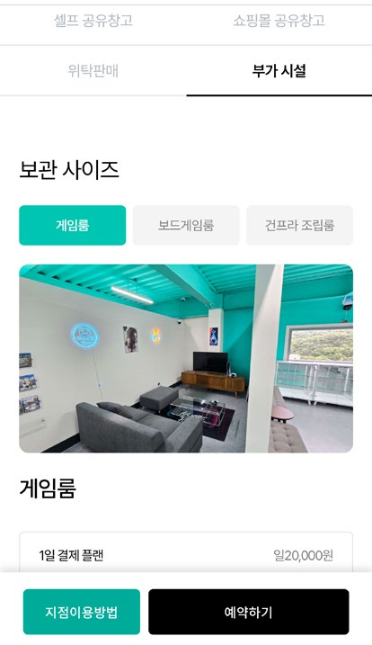
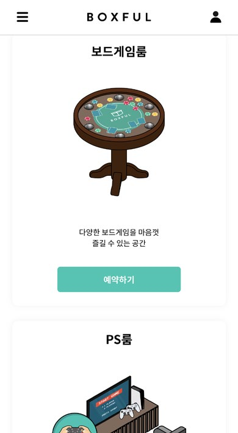
실제 화면 · 지점 문의 경유 단계 제거 + 예약 페이지를 홈 메인에 노출 + 랜딩에서 페이지 내 즉시결제로 전환.
조회는 쌓이는데 결제가 0이던 구조에서, 즉시결제 도입 뒤 실매출이 발생했습니다. ※ 같은 기간 랜딩 노출·유입 변화도 함께 있었으므로 결제 구조 변경을 '유일한' 원인으로 단정하지 않고, 주요 변경과 관찰된 결과로 표기합니다.
취미·엔터 공간예약 서비스 — 예약 페이지 조회는 많은데 결제가 0이었습니다. 고객센터(지점 문의) 경유 구조라 즉시 결제가 불가능한 것이 전환 병목이었습니다.
유입이 충분한데 결제가 0이면, 원인은 광고가 아니라 결제 흐름(UX)일 수 있다 — 랜딩·결제 경로를 바꾸는 것이 광고 증액보다 전환에 더 크게 작용한 사례였다.
세 매체의 광고 성과와 변경 이력을 한 화면에 모았습니다 — 구글애즈·메타·틱톡 API를 직접 연동해 구축했습니다. (1인 · 100%)
3개 매체를 소수 인원으로 운영해야 하는 내부 운영 환경.
매일 반복되는 수작업 데이터 가공에 시간을 뺏겨 의사결정이 느려지고, 다매체·대규모 운영이 병목에 걸림.
"수작업 데이터 가공을 없애야 소수 인원 운영이 가능하다. 단순 조회 툴을 넘어, 운영 판단까지 돕는 도구를 직접 만들자."
원칙 : AI가 만든 산출물은 반드시 직접 검증·판단 후 반영
대시보드의 진짜 가치는 숫자 조회가 아니라 '언제·무엇을·왜 바꿨는지' 운영 맥락을 쌓는 것이다 — 디멘드젠은 ML이 과거 변경에 반응하므로, 히스토리가 있어야 '지금 흔들림이 내 변경 탓인지 ML 학습 탓인지'를 판단할 수 있다.
고객과 제작자를 연결하는 서비스의 기획·UI·사업화를 대표로 맡았습니다.
의류 커스터마이징을 원하는 고객과 커스터마이징 전문가(제작자)를 이어주는 중개 플랫폼.
흩어져 있던 커스터마이징 니즈(고객)와 제작 역량(전문가)을 중개 플랫폼 모델로 연결 → 서비스·UI/UX 구조 설계 주도 → 대표로서 기획부터 사업화까지 추진.
창업에서 배운 세 가지
이 경험이 마케팅에서도 '완벽한 소재'보다 '빠른 A/B 검증'을 택하게 만들었습니다.